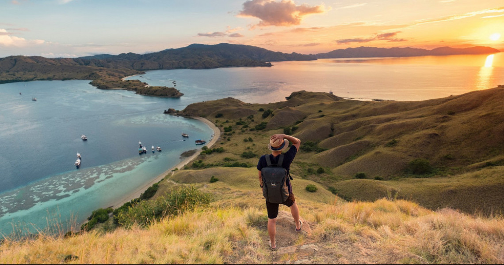
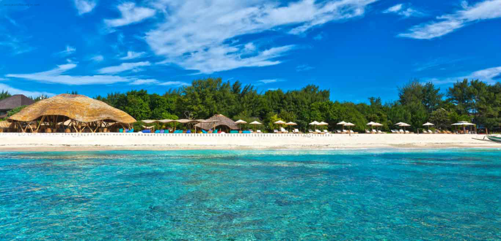
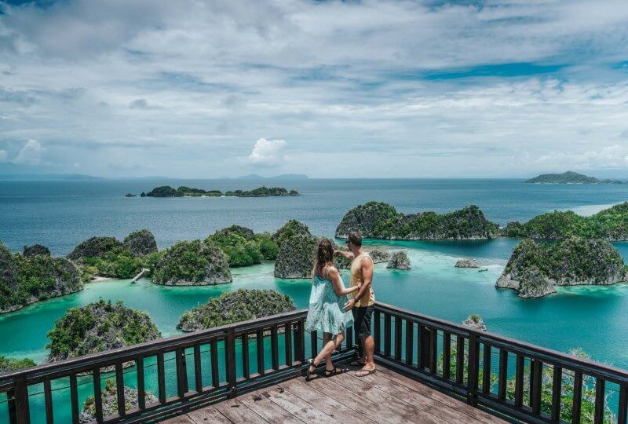
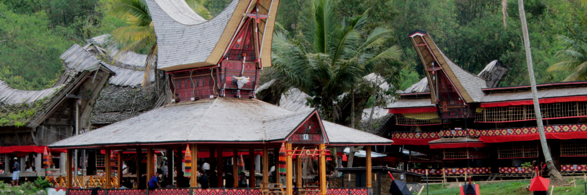
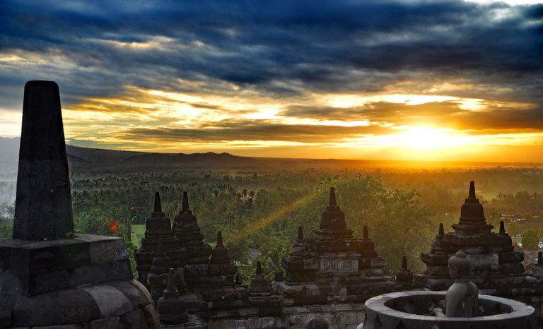
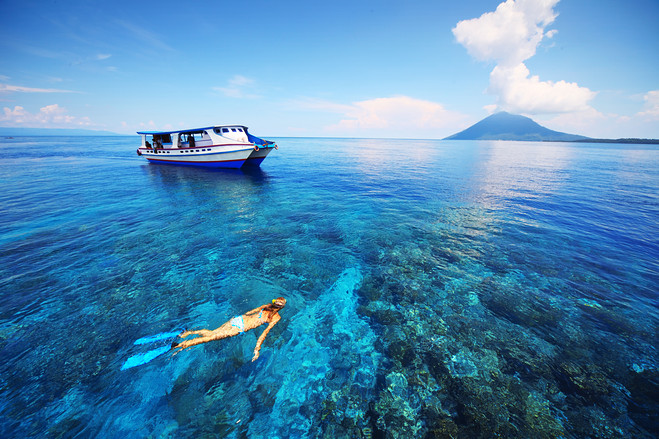
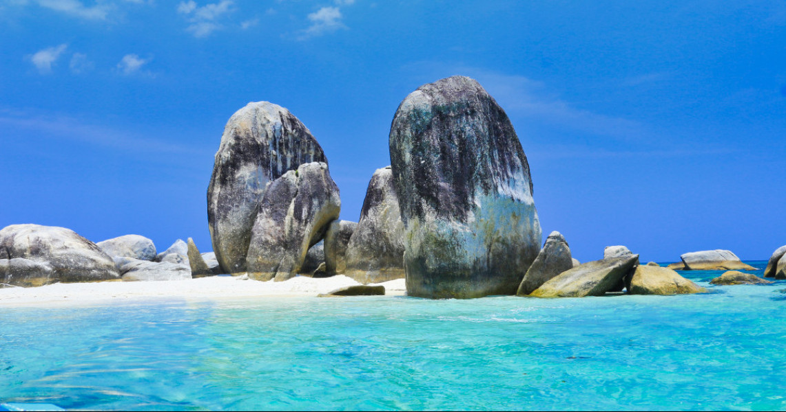

10 Tempat Wisata di Indonesia yang Wajib dikunjungi!
Sudah sejauh apa Anda menjelajah tempat wisata di Indonesia? Anda lebih suka liburan ke luar negeri atau berkeliling
negeri sendiri? Dari Sabang sampai Merauke, tempat wisata di Indonesia bagai hamparan permadani dengan keindahan alam
yang luar biasa. Mulai dari kekayaan alam bawah laut sampai gugusan pegunungan, Indonesia adalah juaranya. Anda suka pantai?
Indonesia memiliki deretan pantai yang tak akan habis Anda jelajahi. Anda suka gunung? Indonesia memiliki daftar pegunungan
yang menunggu untuk segera Anda daki. Tak hanya kekayaan alamnya yang melimpah, kebudayaan di Indonesia pun sangat beragam.
Setiap daerah memiliki budaya khas yang menjadikan negeri ini semakin berwarna. Masih meragukan kekayaan negeri sendiri?
Berikut rangkuman 10 tempat wisata di Indonesia yang wajib Anda kunjungi:
Pulau Komodo

Pulau Komodo masuk dalam kawasan Taman Nasional Komodo bersama pulau-pulau lain di sekitar Kepulauan Nusa Tenggara.
Pada tahun 1986, UNESCO menetapkan tempat wisata di Indonesia ini sebagai salah satu situs warisan dunia.
Pulau ini dianggap sebagai habitat binatang komodo yang wajib dilindungi. Salah satu penghargaan tertinggi yang
berhasil diraih adalah berhasil masuk dalam jajaran tujuh kejaiban alam di dunia atau yang lebih dikenal dengan
New Seven Wonders of Nature pada tahun 2011.
Trio Gili

Trio Gili merupakan tiga pulau cantik yang ada di Lombok. Ketiga pulau tersebut antara lain Gili Trawangan,
Gili Meno dan Gili Air. Ketiganya tak hanya dikenal oleh wisatawan domestik, tapi juga telah berhasil
mengundang banyak wisatawan mancanegara untuk datang. Dari ketiga pulau tersebut, bisa dibilang Gili Trawangan
adalah yang paling populer. Selain karena ukurannya yang lebih luas dibanding kedua pulau lainnya,
di sini juga telah berdiri banyak tempat hiburan seperti bar dan kafe. Ada banyak kegiatan yang bisa Anda lakukan
di tempat wisata ini mulai dari berjemur, menyelam sampai snorkeling. Yang lebih asyik, Anda juga bisa menyewa
sepeda atau naik cidomo, kereta kuda semacam delman, untuk berkeliling pulau.
Raja Ampat

Raja Ampat menjadi primadona baru di dunia pariwisata Indonesia. Pesona tempat wisata di Indonesia ini mulai banyak
dikenal baik oleh wisatawan domestik maupun mancanegara. Raja Ampat sendiri merupakan kumpulan dari pulau-pulau di ujung Papua.
Ada empat pulau utama di sini, yaitu Waigeo, Misool, Salawati dan Batanta. Kekayaan alam bawah laut Raja Ampat tak perlu
diragukan lagi. Perairan di tempat wisata ini dikenal sebagai salah satu lokasi menyelam dan snorkeling terbaik di dunia.
Bahkan The Nature Conservancy menyebut bahwa sekitar 75% biota laut dunia dapat ditemukan di perairan Raja Ampat.
Tana Toraja

Tana Toraja memiliki keindahan alam yang luar biasa mulai dari deretan pegunungan dan hijau perbukitannya. Selain kaya akan alamnya,
tempat wisata d Indonesia ini juga kaya akan budaya leluhur yang masih dijaga sampai saat ini. Di sini, ada banyak tradisi kuno yang
masih dipertahankan, salah satunya adalah Rambu Solo’. Rambu Solo’ merupakan upacara pemakaman di Tana Toraja. Apa menariknya upacara
pemakaman? Eits, upacara pemakaman adat Tana Toraja ini tak bisa Anda lewatkan begitu saja. Rambu Solo’ merupakan satu-satunya upacara
pemakaman termahal di Indonesia dan mungkin juga di dunia. Upacara ini dilakukan selama berhari-hari dengan biaya yang tak sedikit.
Salah satu ritual yang dilakukan adalah sembelih kerbau. Kerbau ini tak cukup hanya satu. Semakin tinggi kasta orang yang meninggal,
maka semakin banyak kerbau yang dikorbankan.
Bali

Siapa tak mengenal Bali? Sulit untuk memilih tempat wisata apa yang paling menarik di Bali, karena hampir seluruh penjuru Bali adalah
tempat wisata yang luar biasa. Bali memiliki banyak keindahan alam yang sangat indah mulai dari deretan pantainya, suasana pegunungannya
sampai pura-pura sakralnya. Dari sekian banyak tempat wisata menarik, yang paling populer di telinga wisatawan tentu saja Pantai Kuta,
Pantai Legian, Pantai Seminyak, Pura Tanah Lot dan suasana pedesaan Ubud. Bali menjadi bukti bahwa untuk bisa menari perhatian dunia
internasional, budaya dan nilai kekhasan tak perlu dikorbankan. Dengan tetap menjaga budayanya, Bali justru mengundang banyak wisatawan
asing untuk datang. Di sini, Anda akan banyak menemui sekumpulan wisatawan asing yang sedang menikmati pertunjukan seni dan budaya khas Bali.
Candi Borobudur

Candi Borobudur merupakan kompleks candi Buddha terbesar di dunia. Tempat wisata di Indonesia ini ditetapkan UNESCO sebagai salah satu
situs warisan dunia pada tahun 1991. Candi Borobudur sempat terkubur abu vulkanik dari letusan Gunung Merapi, sampai kemudian ditemukan
oleh Sir Thomas Stamford Raffles di tahun 1814. Tempat wisata di Indonesia ini diperkirakan dibangun pada tahun 824. Bangunannya tersusun
dari balok vulkanik dan membentuk 504 arca Buddha, 72 stupa dan sebuah stupa induk tepat di puncak candi. Mitosnya, jika Anda memasukkan
tangan ke lubang stupa dan berhasil menyentuh arca yang ada di dalamnya, maka keinginan Anda akan terkabul. Di sini, Anda juga bisa membeli
bermacam suvenir mulai dari kaos, gantungan kunci, kipas sampai miniatur Candi Borobudur.
Gunung Bromo

Gunung Bromo selama ini memang menyimpan pemandangan alam yang sangat indah. Kamu akan temukan pesona bukit teletubbies yang menawan, hamparan
lautan pasir yang sempurna, dan beberapa kawah yang ciamik. Di kawasan sekitar Gunung Bromo, kamu pun bisa berinteraksi dengan suku asli yang
ada disana. Suku tersebut adalah Suku Tengger yang masih memiliki hubungan kerabat dengan kerajaan majapahit.
Puncak Jaya Wijaya

Puncak Jayawijaya atau yang biasa disebut dengan Puncak Carstensz adalah satu-satunya puncak gunung di Indonesia yang memiliki salju abadi.
Puncak ini menjulang setinggi lebih dari 5.000 meter di atas permukaan laut. Yang lebih membanggakan lagi adalah Gunung Jayawijaya masuk ke dalam
daftar Seven Summits atau tujuh gunung dengan puncak tertinggi di dunia. Puncak Jayawijaya ini pertama kali ditaklukan oleh seorang penjelajah
asal Belanda bernama Hendrik Albert Lorentz pada tahun 1909. Lorentz berhasil mendaki puncak bersalju ini bersama enam orang suku Dayak Kenyah
yang direkrutnya di Kalimantan. Setelah pendakian yang berhasil ini, mulai banyak pendaki yang mengikuti jejak Lorentz untuk menaklukan Puncak Jayawijaya.
Taman Laut Bunaken

Taman Laut Bunaken menjadi salah satu tempat wisata di Indonesia yang lagi-lagi ditetapkan UNESCO sebagai situs warisan dunia, tepatnya pada tahun 2005.
Hal ini dikarenakan kekayaan dan keragaman biota lautnya yang luar biasa mulai dari terumbu karang, rumput laut sampai spesies ikan yang ada. tempat wisata
di Indonesia ini memiliki lebih dari 30 titik menyelam yang menjadi favorit banyak penyelam domestik maupun mancanegara. Selain menyelam dan bersentuhan
langsung dengan ikan-ikan di sini, Anda juga bisa menyelam bersama kapal selam yang telah disediakan. Kapal ini memiliki dinding kaca transparan untuk
memudahkan Anda melihat pemandangan bawah laut Taman Laut Bunaken tanpa terkena air dan basah. Hmm, menarik!.
Kepulauan Belitung

Nama Belitung makin populer sejak munculnya novel “Laskar Pelangi” karya Andrea Hirata. Pulau yang terkenal sebagai penghasil timah ini menawarkan surga
wisata yang dijamin akan membuatmu terpukau. Ciri khas pantai di Kepulauan Belitung adalah batu granit raksasa yang tersebar di segala penjuru.
Air laut yang biru jernih, pasir putih, dan pepohonan kelapa di bibir pantai adalah kombinasi sempurna untuk ciptakan momen liburan tak terlupakan.